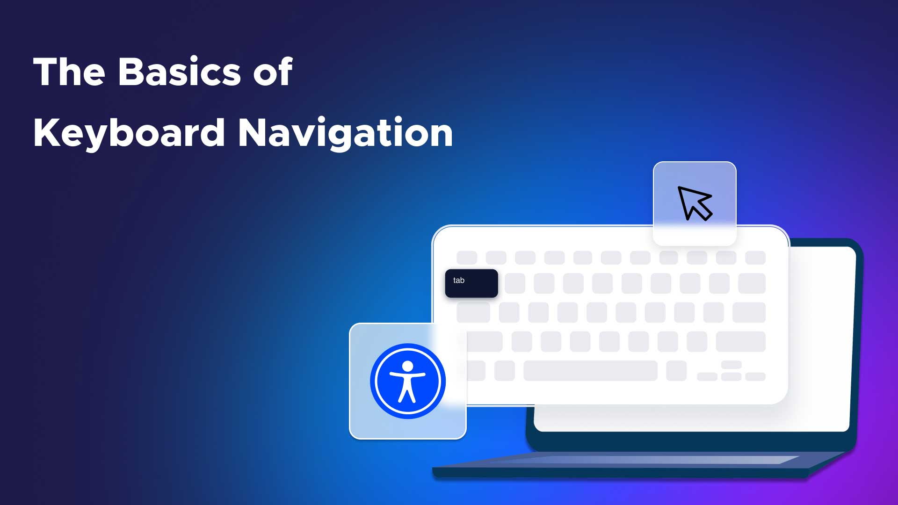

Introduction to Web Accessibility
This guide provides information on web accessibility best practices using semantic HTML and CSS.
This guide provides information on web accessibility best practices using semantic HTML and CSS.
Web accessibility refers to the practice of making websites usable by people of all abilities and disabilities. This includes:
Here are some key HTML practices for accessibility:
<header>, <nav>, <main>,
<section>, and <article>.
<h1> to <h6>alt attributelabel elements


CSS plays a crucial role in web accessibility: